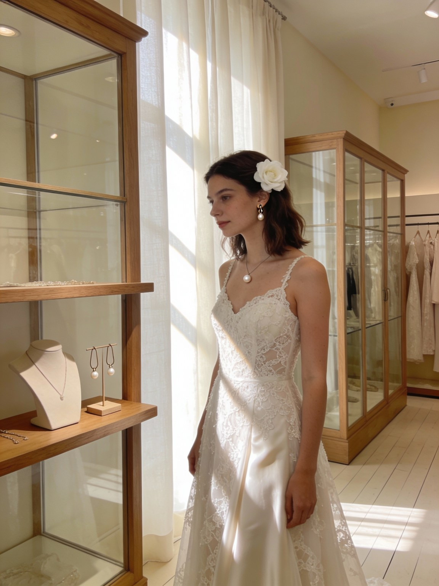
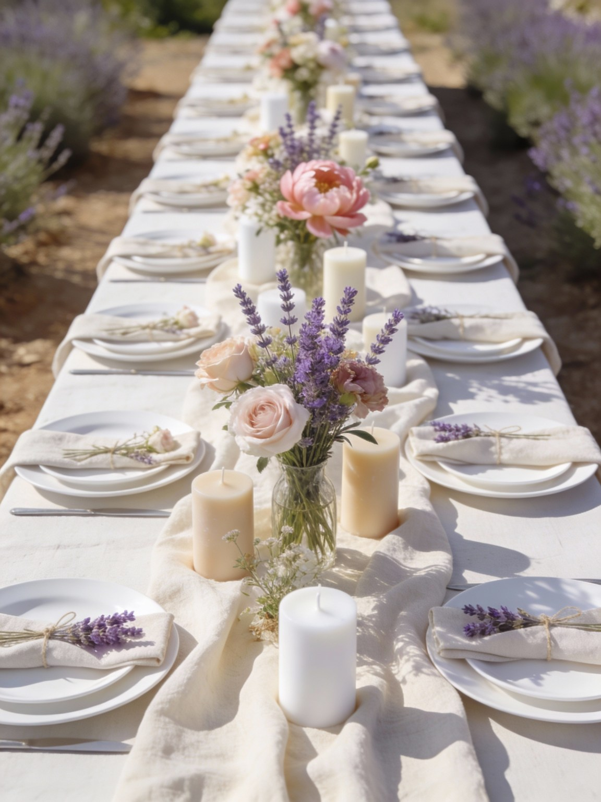

Organiser un mariage est un moment de joie, mais aussi une véritable aventure financière. Beaucoup de couples souhaitent aujourd’hui célébrer leur union de manière éco‑responsable tout en respectant un budget réaliste. Bonne nouvelle : durabilité et maîtrise des coûts vont souvent de pair. En faisant des choix conscients et en évitant le superflu, vous pouvez réduire votre impact environnemental tout en gardant la main sur vos dépenses.
1. Clarifier vos priorités et définir un budget réaliste
Avant tout, prenez le temps de discuter à deux de ce qui compte vraiment pour vous :
- l’expérience de vos invités ou l’intimité d’un petit comité
- la qualité du repas
- un lieu en Provence qui vous ressemble
- une démarche écologique assumée
À partir de là, fixez un budget global, puis allouez une enveloppe à chaque poste (lieu, traiteur, tenues, fleuriste, musique, photo, déco…). L’idée n’est pas d’être parfait, mais d’être lucide : mieux vaut un budget réaliste qu’un montant sous‑estimé qui explose en cours de route.
2. Choisir un lieu local, cohérent… et peu énergivore
Le lieu est souvent le premier gros poste du budget et un levier fort pour réduire l’empreinte carbone. Pour concilier les deux :
- privilégiez un lieu proche de la majorité des invités, bien desservi, afin de limiter les kilomètres parcourus
- si possible, optez pour un lieu qui permet de tout rassembler (cérémonie, cocktail, dîner, parfois hébergement), plutôt qu’une succession de sites éloignés
- faites jouer la beauté naturelle des extérieurs (cour, jardin, oliveraie, bastide…), qui demandera moins de décoration et donc moins de dépenses
Un lieu bien choisi peut vous faire économiser sur les transports, la décoration et une partie de la logistique.
3. Miser sur les prestataires locaux et éthiques
Un mariage éco‑responsable passe par un écosystème de prestataires engagés :
- traiteur travaillant des produits locaux, de saison, parfois bio
- fleuriste privilégiant les fleurs françaises et de saison plutôt que les variétés importées
- créateurs, photographes, DJ ou groupes basés dans la région, limitant ainsi les déplacements
Travailler local n’est pas toujours “moins cher” sur chaque ligne, mais cela réduit des coûts cachés (transport, frais additionnels) et donne plus de sens à vos dépenses.
4. Réduire le nombre d’invités : moins nombreux, mieux choyés
La taille de la liste d’invités impacte directement votre budget (repas, boissons, mobilier, papeterie…) et la quantité de ressources consommées. Un mariage plus intimiste permet :
- de réduire les coûts de manière très concrète
- d’offrir davantage de qualité à chaque personne (meilleur menu, plus belle vaisselle, déco plus aboutie)
- de créer une ambiance plus chaleureuse, en cohérence avec une démarche responsable
Dire non à l’hyper‑grand comité, c’est souvent dire oui à un mariage plus aligné avec vos valeurs.
5. Tenues : seconde main, location et pièces réutilisables
La robe de mariée et les costumes peuvent représenter une somme importante… pour quelques heures de port seulement. Des alternatives plus durables existent :
- robe et costume de seconde main, retouchés à vos mesures
- location en boutique spécialisée
- tenues pensées pour être re‑portées (pièces séparables, couleurs neutres, style intemporel)
C’est un excellent moyen de réduire la facture tout en limitant la production de vêtements neufs.


6. Décoration : “moins mais mieux” et matières naturelles
Côté déco, un réflexe simple : se demander ce qui est vraiment indispensable. Quelques pistes :
- s’appuyer sur la beauté du lieu plutôt que chercher à le transformer
- choisir des éléments réutilisables : bougies, textiles (nappes, serviettes en tissu), vaisselle louée, vases récupérés
- privilégier les fleurs de saison, locales, et compléter avec du feuillage, des plantes en pot ou des éléments déjà présents sur le lieu
Après le mariage, une partie de ces éléments peut rejoindre votre intérieur, être revendue ou louée à d’autres couples.
7. Une assiette engagée : saison, local, végétal
Le repas est l’un des plus gros postes budgétaires, mais aussi un magnifique terrain de jeu pour concilier plaisir, budget et impact :
- menu de saison, pensé avec le traiteur pour limiter le gaspillage
- mise en avant des produits locaux (fromages, huiles, vins, fruits et légumes de Provence…)
- proposition d’un menu végétarien ou largement végétalisé, souvent plus économique et plus respectueux de l’environnement
Un bon traiteur saura créer des plats généreux, gourmands et conviviaux, sans surenchère de viande ni de produits importés.
8. Louer, réutiliser, partager
Plutôt que d’acheter pour un seul jour, privilégiez la boucle courte :
- location de mobilier, vaisselle, arches, nappes, bougeoirs…
- réutilisation d’objets que vous possédez déjà (vases, cadres, textiles)
- mutualisation d’achats entre plusieurs couples ou avec vos proches (guirlandes, panneaux, accessoires)
C’est à la fois plus économique et plus respectueux de la planète qu’une accumulation d’objets neufs voués à finir au fond d’un placard (ou pire, à la poubelle).
9. Cadeaux invités et papeterie : utile, durable… ou digital
Les cadeaux d’invités et la papeterie peuvent vite faire grimper la note. Pour rester alignés avec votre démarche :
- choisissez des cadeaux utiles et durables (petites plantes, graines à semer, gourmandises locales, produits faits maison)
- réduisez le nombre de supports imprimés : un beau faire‑part papier, complété par un site de mariage ou des informations envoyées par e‑mail
- privilégiez des papiers recyclés, des encres responsables ou des imprimeurs engagés, si vous tenez à conserver du papier
Les invités se souviendront davantage de l’expérience que d’un objet gadget.
10. Suivre votre budget… et l’impact de vos choix
Pour garder le cap, créez un tableau de suivi (ou utilisez un outil dédié) où vous notez :
- le budget prévu et le budget réel pour chaque poste
- les solutions choisies (location, seconde main, local, végétal…)
- les économies réalisées grâce à vos arbitrages
Visualiser à la fois les chiffres et vos choix responsables est très motivant et vous aide à prendre de bonnes décisions jusqu’au jour J. Vous trouverez dans cet article un ensemble d’outils vous permettant de gérer au mieux l’organisation de votre mariage éco-responsable.
Organiser un mariage éco‑responsable avec un budget maîtrisé, ce n’est pas faire “moins bien”, c’est faire plus juste : moins de gaspillage, moins de superflu, plus de sens, de qualité et de cohérence avec vos valeurs. Et si vous souhaitez être accompagné·e pour arbitrer les postes, trouver des prestataires engagés en Provence et construire un budget aligné, une wedding planner éco‑responsable peut vous guider pas à pas, sans jamais perdre de vue ce qui compte pour vous.